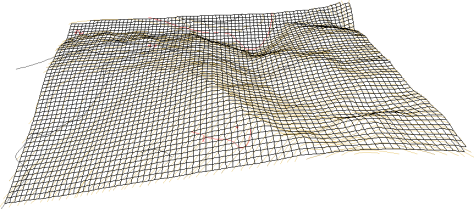

| |
|
EŞ EĞİM HARİTALARI
|
Araçlar → Eş Eğim Haritası Oluştur seçeneği iki yardımcı programa erişim sağlar:
Bu grid'in sadece yatay veya dikey çizgileri gösterilebilir. Ayrıca, eğik bir grid de oluşturulabilir. Bu durumda bizden şunlar istenir: Sol alt köşe, yönü belirtmek için bir nokta ve sağ üst köşe. İletişim kutusu ayrıca eş eğim haritasını oluşturup oluşturmama imkanı da sunar. Eğim bilgisiyle noktalar oluştur seçeneği etkinleştirildiğinde, program düzenli grid'in yüzey merkezlerinde yer alan bir nokta bulutu oluşturur. Her sembolün yönelimi, o noktadaki maksimum eğim yönüyle aynıdır. Sembolün (bir ok) kotu, o noktadaki arazinin eğimiyle orantılıdır; bu eğim, kullanıcının seçimine göre yataya göre derece cinsinden veya yüzde bire göre (veya kullanıcının istediği değere göre) eğim olarak ifade edilir. 
|